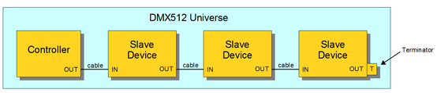
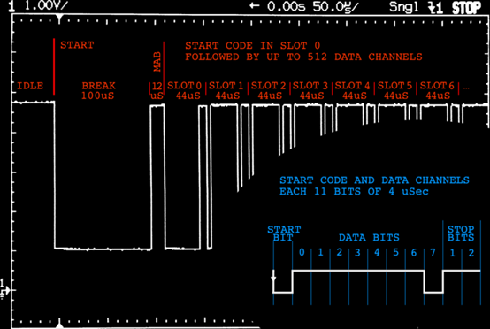

DMX512（digital multiplex）
其实就是主机向从机整包单向广播发送的协议（protocol），从机自取所需。
DMX512 数据协议是美国舞台灯光协会（USITT）于 1990 年发布的一种灯光控制器与灯具设备进行数据传输的标准。它包括电气特性，数据协议，数据格式等方面的内容。
512 协议规定使用的波特率是 250Kbps
# 链接拓扑（network topology）
根据后面的协议可以知道，其实就是将所有的 slave 挂到线上去。（线最长可以多长？）

# 协议（protocol）时序
1） 先说明地址，包的格式是固定的，第一个数据帧就是地址 1（说是 0 也可以），接下来的数据帧，地址逐渐 + 1。
2） 1 slot 或者叫 1 data frame（数据帧）= 1 start bit（低电平） + 8 data bits + 2 stop bits（高电平） = 11bits， 1bit = 4us，1slot = 44us。（下图右下角的蓝色字体部分）
3） 1 packet （数据包）= 1 Break + 1 MAB（mark after break） + 1 SC（start code） + 512 slots + 1 MTBP（mark time between packets） （下图红色字体部分）
- 1 break 典型值 88us
- MAB 典型值 8us
- SC 就是一帧 44us，第 0 帧
- MTBP，高电平有效，0 - 1s 之间
time = 88us + 8us + 44us + 512 * 44us + 0 = 22668us = 22.668ms 发包频率 44.11Hz，也就是控制频率了，如果地址用不完，把 slot 减少，时间也可以节省，然后频率可以更高了。(调光控制台每发送一个信息包，可以对全部 512 个受控通道形成一次全面的控制。发送一个信息包的时间大约是 23 ms，每秒钟将对所有 512 个受控通道完成 44 次控制，即受控光路的刷新频率 44 Hz，如果实际受控通道少于 512 个，那么刷新频率将相应提高。)

每个 slot 对应右下角放大的每帧时序：

START BIT 为开始位，宽度为一个比特，是受控灯具准备接收并解码控制数据的开始标志。
STOP BITS 为结束位，宽度为两个比特，表示一个指令帧的结束。
D0～ D7 为 8 位控制数据，其电平组合从 00000000 ~ 11111111 共有 256 个状态（对应十进制数的 0～255），控制灯光的亮度时，可产生 256 个亮度等级，00000000 (0) 对应灯光最暗，11111111 (255) 对应灯光最亮。
无校验位。
DMX512 指令的位宽（每比特宽度）是 4 us，每一个指令帧 11 位，故指令帧宽度为 44 us，传输速率为 1 / 44us = 250 kbps。
note： 一个完整的 DMX512 信息包（Packet）由一个 Break 位、一个 MAB 位、一个 SC 、512 个数据帧和一个 MTBP 位构成。
- Break 为中断位，对应一个信息包结束后的程序复位阶段，宽度不少于两个帧（22 bit，1bit = 4us）。
- 程序复位结束后应发送控制数据，但由于每一个数据帧的第一位（即开始位）为低电平，所以必须用一个高电平脉冲间隔前后两个低电平脉冲，这个起间隔、分离作用的高电平脉冲即 MAB（Mark After Break），此脉冲一到，意味着 “新一轮” 的控制又开始了。
- SC（Start Code）意为开始代码帧（slot0），和此后到来的数据帧一样，也是由 11 位构成，除两个高电平的结束位之外，其他 9 位全部是低电平，通常将其叫做第 0 帧或第 0 通道，可理解为一个不存在的通道。
- MTBP（Mark TimeBetween Packets）标志着一个完整的信息包发送完毕，是下一个信息包即将开始的 “空闲位”，高电平有效。
# 时序规格标准
在 DMX512-A 草案中，执行的标准如下：

- Timing Diagram Values for Transmitter
| Designation | Description | Min | Typical | Max | Unit |
|---|---|---|---|---|---|
| - | Bit Rate | 245 | 250 | 255 | kbit / sec |
| - | Bit Time | 3.92 | 4 | 4.08 | µs |
| - | Min. Update time for 513 slots | - | 22.7 | - | ms |
| - | Max. Refresh rate for 513 slots | - | 44 | - | updates / sec |
| 1 | SPACE for BREAK | 92 | 176 | - | µs |
| 2 | MARK after BREAK (MAB) | 12 | - | < 10^6 | µs |
| 9 | MARK Time between slots | 0 | - | < 1.00 | s |
| 10 | MARK before BREAK (MBB) | 0 | - | < 1.00 | s |
| 11 | BREAK to BREAK time | 1204 | - | 10^6 | µs |
| 13 | DMX512 Packet | 1204 | - | 10^6 | µs |
- Timing Diagram Values for Receivers
| Designation | Description | Min | Typical | Max | Unit |
|---|---|---|---|---|---|
| - | Bit Rate | 245 | 250 | 255 | kbit / sec |
| - | Bit Time | 3.92 | 4 | 4.08 | µs |
| - | Min. Update time for 513 slots | - | 22.7 | - | ms |
| - | Max. Refresh rate for 513 slots | - | 44 | - | updates / sec |
| 1 | SPACE for BREAK | 88 | 176 | - | µs |
| 2 | MARK after BREAK (MAB) | 8 | - | < 10^6 | µs |
| 9 | MARK Time between slots | 0 | - | < 1.00 | s |
| 10 | MARK before BREAK (MBB) | 0 | - | < 1.00 | s |
| 11 | BREAK to BREAK time | 1196 | - | 1.25 * 10^6 | µs |
| 13 | DMX512 Packet | 1204 | - | 1.26 * 10^6 | µs |
# 通道控制
目前由于灯光种类的多样性，不再是只用单通道控制一款灯亮度这么简单了；像摇头灯、彩色灯等灯光设备，需占几个或几十个控制通道；每个通道对应不同的功能，该功能根据灯厂资料提供，如下所例：

https://www.abolight.com/prod/sort2/s6.php
http://www.abolight.com/prod/sort8/lkip-led150c.php
# 非标程序设计
基于 DMX512 控制协议进行调光控制的灯光系统叫做数字灯光系统。目前，包括摇头灯在内的各种舞台灯、调光控制器、控制台、换色器等各种灯光控制设备，都对 DMX512 协议进行支持，已全面实现调光控制的数字化，并在此基础上，逐渐趋于网络化（ArtNet 协议）。那么，根据上面的协议通讯，我们是否可以模拟信号对 DMX512 协议进行非标设计呢？答案是可以的。
# 参考
《ANSI-ESTA_E1-11_2008R2018.pdf》
https://www.erwinrol.com/page/articles/dmx512/
https://ww1.microchip.com/downloads/en/Appnotes/01076A.pdf
http://picprojects.org.uk/projects/dmx/dmx688/